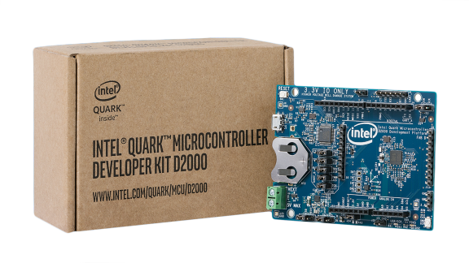

Quark D2000 Development Board
Overview
The Intel® Quark ™ microcontroller D2000 package is shipped as a 40-pin QFN component.
{kind=link}
Intel™ Quark® microcontroller D2000 contains the following items:
- On-board components:
- Accelerometer/Magnetometer sensor
- UART/JTAG to USB convert for USB debug port
- Expansion options:
- “Arduino Uno” compatible SIL sockets ( 3.3V IO Only )
- Other connectors:
- 1x USB 2.0 Device Port – micro Type B
- On-board coin cell battery holder
- 5V input a screw terminal/header (external power or Li-ion)
- EEMBC power input header
Hardware
General information for the board can be found at the Intel Website, which includes both schematics and BRD files.
The Intel® Quark™ Microcontroller D2000 Development Platform supports the familiar open standard Arduino Uno Rev 3.0 physical interface and is mechanically compatible with Uno Rev 3.0. It does not support the 6 pin ICSP Header.
Supported Features
| Interface | Controller | Driver/Component |
|---|---|---|
| MVIC | on-chip | interrupt_controller |
| UART | on-chip | serial port-polling; serial port-interrupt |
| SPI | on-chip | spi |
| I2C | on-chip | i2c |
| GPIO | on-chip | gpio |
| PWM | on-chip | pwm |
Programming and Debugging
The D2000 board configuration details are found in the project’s tree at
boards/x86/quark_d2000_crb.
To build an application for this board, the following call is needed:
$ make BOARD=quark_d2000_crb <make target>
Flashing
Since the board has a built-in JTAG; it is possible to flash the device through the USB only. Set the following jumpers to enable the built-in JTAG:
Jumper UART Common JTAG Name J9 Open X X TDO J10 Open X X TDI J11 Open X X TRST J12 X N/A X TMS J17 X N/A X TCK Connect the D2000 via USB to the host computer.
Once the binary is built, it can be flashed to the device by:
$ make BOARD=quark_d2000_crb flash
Debugging
To debug an application on the Quark D2000 board, follow these steps. As an example, we are using the hello_world application.
Go to the application’s folder:.
$ cd $ZEPHYR_BASE/samples/hello_world
Verify the final binary is in
outdir/quark_d2000_crb/zephyr.elf.To enable the debug process, enter:
$ make BOARD=quark_d2000_crb debug